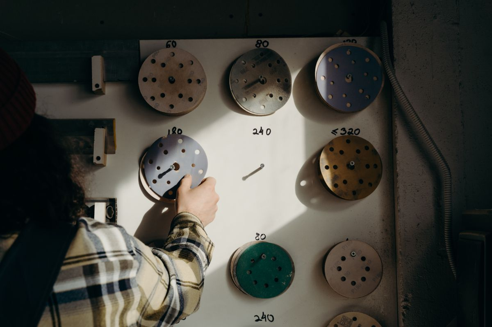

Why Us

Big body shops are built for insurance work and speed. We are built for the people who actually care how their car looks, and want it done right the first time.
- One person handles your car from start to finish.
- Photo updates at every step of the process.
- Honest estimates, with no surprise charges.
- A one-year warranty on all paint and clear coat work.
When your car leaves, it should feel like a new one. That is the whole idea behind the snake: shed the old, keep what you love.